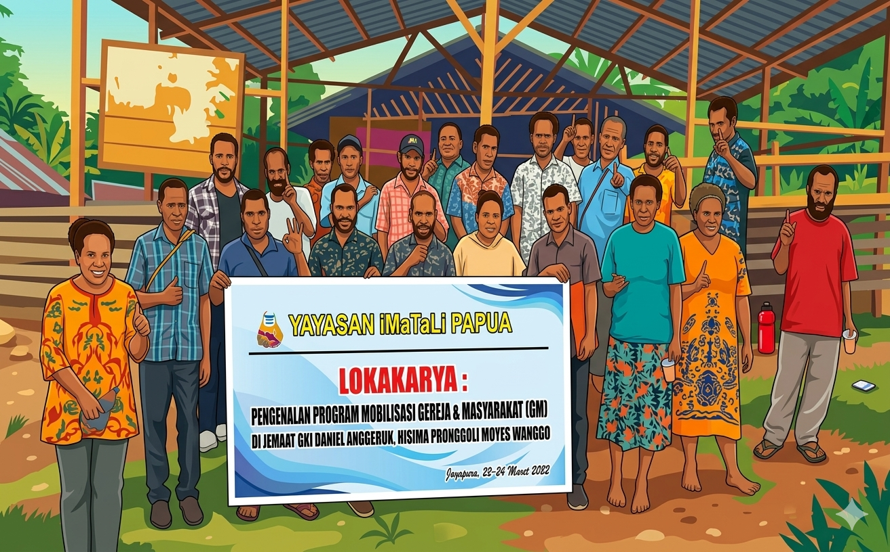

Pelatihan Pemuda & Remaja sebagai Agen Perubahan
Program pembinaan generasi muda Papua untuk memperkuat kepemimpinan komunitas, keterampilan sosial, dan semangat pelayanan damai.
Lihat SelengkapnyaDesain ini merupakan prototype usulan berdasarkan analisa oleh tim www.nokensoft.com. Seluruh data dan informasi pada halaman ini disusun menggunakan metode pencarian di media sosial dan internet dengan bantuan AI.
Yayasan iWaTaLi Papua didirikan di Sentani pada 27 Juli 2017 untuk memperkuat pelayanan sosial berbasis iman Kristen, memberdayakan masyarakat, dan membangun perdamaian lintas budaya.
2017
Tahun Berdiri
Sentani
Pusat Operasional
Yahukimo+
Jangkauan Program
Ikuti kabar terbaru seputar kegiatan pengembangan perdamaian, pemberdayaan masyarakat, dan pelayanan sosial iWaTaLi Papua.
Program pembinaan generasi muda Papua untuk memperkuat kepemimpinan komunitas, keterampilan sosial, dan semangat pelayanan damai.
Lihat Selengkapnya
Pendampingan gereja-gereja di Tanah Papua agar pelayanan sosial berbasis iman Kristen berjalan lebih terstruktur dan berdampak luas.
Lihat Selengkapnya
iWaTaLi mendorong pemuda dan komunitas menjadi garda terdepan perlindungan hak asasi manusia, termasuk di wilayah Yahukimo.
Lihat Selengkapnya
Kampanye lingkungan yang berawal dari aksi kebersihan pantai di Jayapura kini berkembang menjadi pendidikan lingkungan di sekolah-sekolah.
Lihat Selengkapnya2017
Berdiri
Sentani
Pusat

Yayasan iWaTaLi Papua adalah LSM/NGO yang didirikan di Sentani, Kabupaten Jayapura pada 27 Juli 2017. Nama iWaTaLi berasal dari ucapan salam damai atau terima kasih dalam berbagai bahasa daerah Papua, mencerminkan semangat kebersamaan lintas budaya.
Meningkatkan kapasitas SDM Papua melalui pendidikan dan pelatihan, serta memberdayakan masyarakat agar mandiri dan sejahtera.
Membangun kerja sama antara lembaga masyarakat sipil dan pemerintah demi pengembangan perdamaian di Papua.
Sentani dan Jayapura sebagai pusat operasional, dengan jangkauan program hingga wilayah terpencil Papua termasuk Kabupaten Yahukimo dan sekitarnya.
Informasi kegiatan, profil yayasan, dan dokumentasi program iWaTaLi Papua.
Kunjungi WebsiteIkuti aktivitas pemuda, gereja, dan komunitas dalam program perdamaian serta pemberdayaan.
Buka InstagramSentani, Kabupaten Jayapura, Papua sebagai basis kerja pelayanan dan pemberdayaan iWaTaLi.
Lihat LokasiLihat momen kolaborasi dan aksi nyata iWaTaLi Papua dalam pengembangan perdamaian dan pemberdayaan masyarakat.
Galeri Kegiatan
Bagikan ke Media Sosial
Link berhasil disalin.
Visualisasi contoh titik kegiatan dari Sentani dan Jayapura hingga wilayah terpencil seperti Yahukimo berbasis Leaflet JS dan OpenStreetMap.
Pusat Operasional
Sentani
Koordinasi program dari Sentani dan Jayapura.
Jangkauan Program
Yahukimo+
Termasuk wilayah terpencil Papua dan sekitarnya.
Klik marker untuk melihat label contoh lokasi kegiatan. Data marker pada peta ini merupakan visualisasi sebaran program.
Mari bergandengan tangan memperkuat kapasitas masyarakat, gereja, dan generasi muda Papua melalui program iWaTaLi.
Hubungi Kami